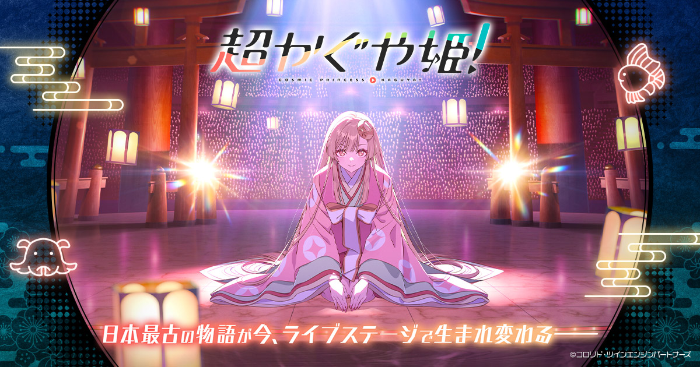
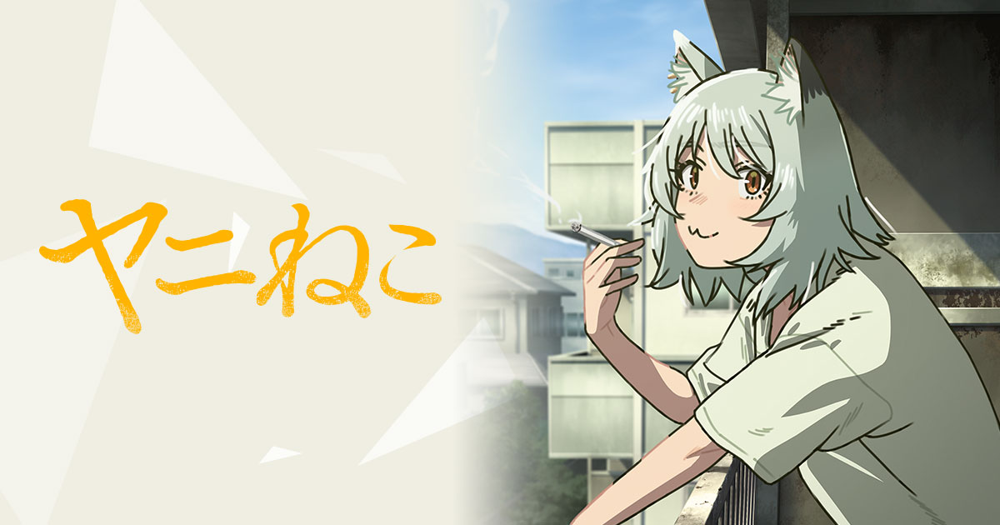
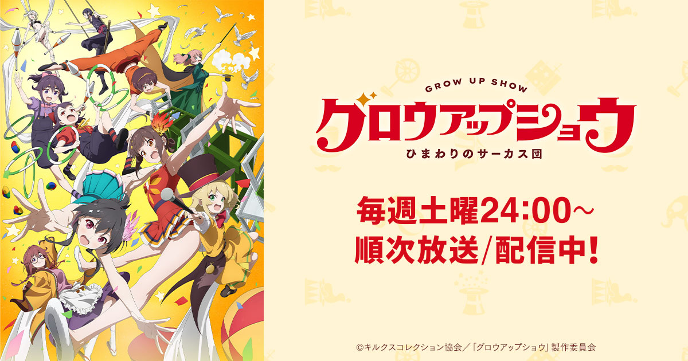
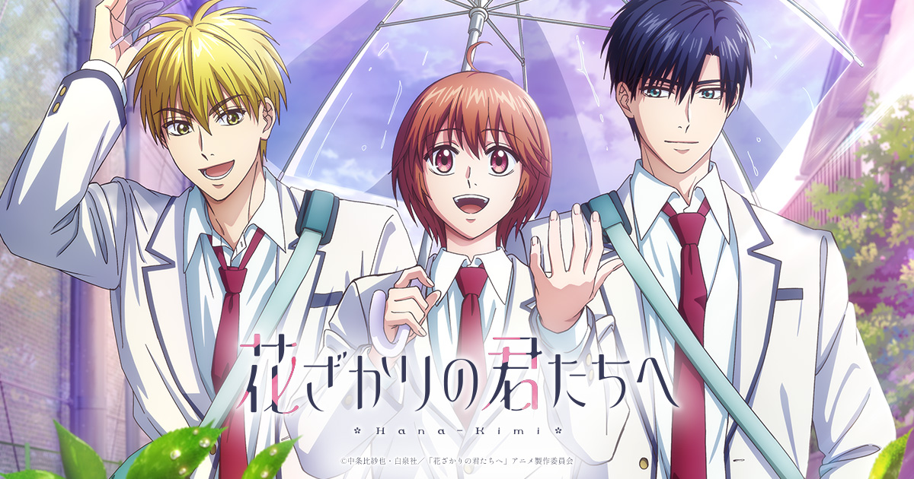
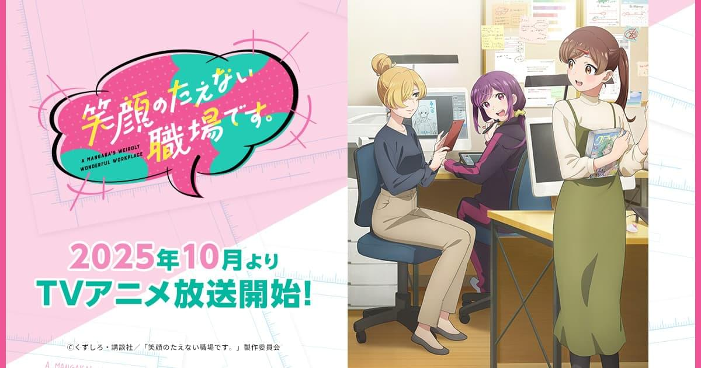
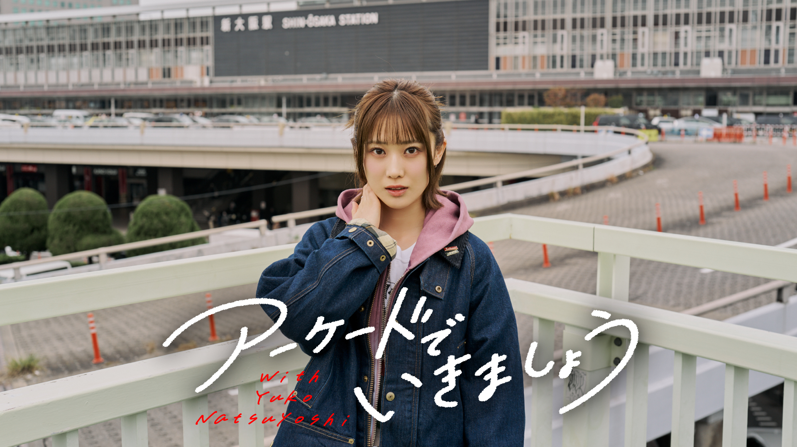

2026 / Netflix 動畫電影
超かぐや姫！
夏吉ゆうこ as かぐや
以輝夜姬故事為起點，走進虛擬空間與音樂交織的世界。夏吉擔任かぐや的配音，也是這份手帖裡 THE FIRST TAKE 演出的連結。
作品官方網站 ↗YUKO NATSUYOSHI
從甜點貓，到麥克風前的她。
我喜歡的，是那份自由與安靜的反差。
Danny 的聲優手帖 / 非官方個人專題
探索出演作品 ↓最喜歡的角色，是《蔚藍檔案》的千砂。
對，就是那隻「甜點貓」。
吸引我的，還有我感受到的反差：鏡頭前的夏吉很放得開、很自由；鏡頭之外給我的印象，卻是安安靜靜的。這兩種樣子放在一起，就是我特別喜歡她的地方。
— DANNY / 個人的觀察與喜歡夏吉的活動橫跨動畫、遊戲、舞台與音樂。認識她，可以從一個角色開始，也可以先聽一首歌：在這些不同的作品裡，同一位表演者會留下不同的聲音印象。
她從小接觸聲樂，高中時也參加輕音樂社。除了聲優工作，還在雙人組合 Arika 中擔任主唱並參與作詞；音樂並不是角色演出之外的一個小註腳，而是另一條值得慢慢認識的路線。
這份手帖從我最喜歡的千砂出發，接著整理角色作品、角色歌與音樂活動。想看表演，就走進故事；想聽她本人如何唱歌，就轉到 Arika 或現場演出。
人物資料 / 經紀公司官方介紹 ↗《超時空輝夜姬》演出收藏
夏吉ゆうこ × 早見沙織
超かぐや姫！Version
從《超時空輝夜姬》延伸出的歌聲，
在 THE FIRST TAKE 裡留下另一種現場感。
影片與演出資料：THE FIRST TAKE 官方介紹 ↗
近期出演選輯
整理於 2026.09.15

夏吉ゆうこ as かぐや
以輝夜姬故事為起點，走進虛擬空間與音樂交織的世界。夏吉擔任かぐや的配音，也是這份手帖裡 THE FIRST TAKE 演出的連結。
作品官方網站 ↗


夏吉ゆうこ as ジュリア・マックスウェル
夏吉飾演茱莉亞・麥斯威爾。第 2 期於 2026 年 7 月開始播出，也收進這一輪的近期出演清單。
作品官方網站 ↗
作品圖片與出演資料來自各作品官方網站，圖片權利屬原權利人。這裡整理的是出演選輯。
日本聲優，賢プロダクション所屬。
也以 Arika 成員身分參與歌唱與作詞。
超かぐや姫！ / 超時空輝夜姬
從這個主角的聲音出發，再接著聽上方 THE FIRST TAKE 的演出。
魔王学院の不適合者
夏吉的代表角色之一，也是一個認識她動畫配音的入口。
くノ一ツバキの胸の内
擔任主角椿的配音；想繼續探索她的主役作品，可以從這部開始。
アサルトリリィ BOUQUET
這個名字同時出現在動畫、遊戲與舞台，是跨媒介認識她的一條線索。
シャインポスト
從角色表演走向偶像與歌聲的作品，適合接著音樂活動一起認識。
SHOW BY ROCK!! ましゅまいれっしゅ！！
另一個和音樂相連的角色，也於系列遊戲與動畫中登場。
うたごえはミルフィーユ
以阿卡貝拉為題材，讓角色故事與聲優實際歌唱活動彼此連結。
笑顔のたえない職場です。
另一部由夏吉擔任主角的作品，擴展這份手帖的閱讀清單。
ブルーアーカイブ -Blue Archive-
Danny 的最愛。先替「甜點貓」留在收藏第一排。
ウマ娘 プリティーダービー
從賽馬娘的角色演出，認識另一個夏吉的聲音。
アサルトリリィ Last Bullet
延續動畫與舞台的角色，也是系列跨媒介作品的一部分。
聖剣伝説 VISIONS of MANA
她在《聖劍傳說》系列作品中的遊戲配音。
ユニコーンオーバーロード
將遊戲配音收藏延伸到這部策略角色扮演作品。
ドルフィンウェーブ
另一個可從官方出演表繼續探索的遊戲角色。
2022 年 8 月開始活動，由主唱夏吉ゆうこ與作曲家、吉他手大和組成。這裡可以聽到她以音樂組合成員身分呈現的作品。
認識 Arika ↗以人聲合奏、女子高中生與青春為題材的音樂企劃。夏吉飾演繭森結，並與其他成員參與歌唱活動。
作品官方網站 ↗從《SHOW BY ROCK!!》與《シャインポスト》，到《超時空輝夜姬》，也可以沿著角色作品找歌，感受表演與歌唱如何相互延伸。
回到 THE FIRST TAKE ↑出演與活動資料：賢プロダクション官方介紹 ↗ · うたミル官方網站 ↗

一個跟著夏吉尋找「喜歡」的外景綜藝。走進感興趣的地方，體驗想做的事情，讓好奇心決定這一趟要往哪裡走。
和動畫、角色歌放在一起看，這個節目是另一種認識她的方式：鏡頭跟著她的腳步，留下對話、反應，以及享受當下的樣子。也正好呼應我喜歡的那份自由感。
節目介紹與圖片：官方頻道。部分內容依平台訂閱方案提供。
從千砂、莎夏或白井夢結開始，留意她如何透過語氣和節奏，讓不同角色成立。
回到作品列表 ↑官方 Voice Sample 整理了台詞、旁白與自由談話。拿掉畫面後，可以更專心聽聲音的變化。
聽官方樣本 ↗從角色歌延伸到 Arika，再走進其他日文音樂。把下一首想聽的歌，留給 J-POP 唱片架。
前往 J-POP ↗台詞、旁白、自由談話，還有音樂。
從官方試聽開始，找到不同的表演面貌。